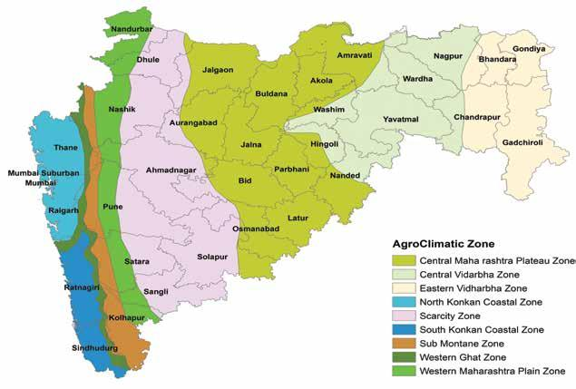

Select The Zones
Zones In Maharastra
Central Maharastra Plateau Zone
Central Vibarbha Zone
Eastern Vidharbha Zone
North Konkan Coastal Zone
Scarcity Zone
South Konkan Coastal Zone
Sub Montane Zone
Western Ghat Zone
Western Manarastra Plain Zone

Central Maharastra Plateau Zone
1.jalgaon 2.Aruangabad 3.Jaina 4.Parbhani 5.Hingoli 6.Buldana 7.Akola 8.Amravati 9.Bid 10.Latur 11.Osmanabad 12.Solapur 13.Some Part Of Washim
Central Vibarbha Zone
1.Nagpur 2.Wardha 3.Yavatmal 4.Nanded 5.Hingoli 6.Washim 7.Some part Of Chandrapur&Amravati
Eastern Vidharbha Zone
1.Chandrapur 2.Gadchiroli 3.Gondiya 4.Some Part Of Nagpur
North Konkan Coastal Zone
1.Thane 2.Mumbai Suburban 3.Mumbai 4.Rajgarph
Scarcity Zone
1.Dhule 2.Nashik 3.Ahmadnagar 4.Pune 5.Satara 6.Sangli 7.Solapur 8.Some Part Of(1.Osmanabad 2.Bid 3.Aurangabad 4.Jalgaon 5.Nandurbar)
South Konkan Coastal Zone
1.Ratnagiri 2.Sindhudurg
Sub Montane Zone
1.Kolhapur 2.Some Part of (1.Sangii 2.Pune 3.Nashik 4.Satara)
Western Ghat Zone
1.Nashik 2.Pune 3.Some Part Of (1.Kolhapur 2.Sindhudurg 3.Ratnagiri 4.Raigarh 5.Mumbai)
Western Manarastra Plain Zone
1.Nandurabr 2.Dhule 3.Nashik 4.Ahmadnagar 5.Pune 6.Stara 7.Some Part Of(1.Sangli 2.Kolhapur)